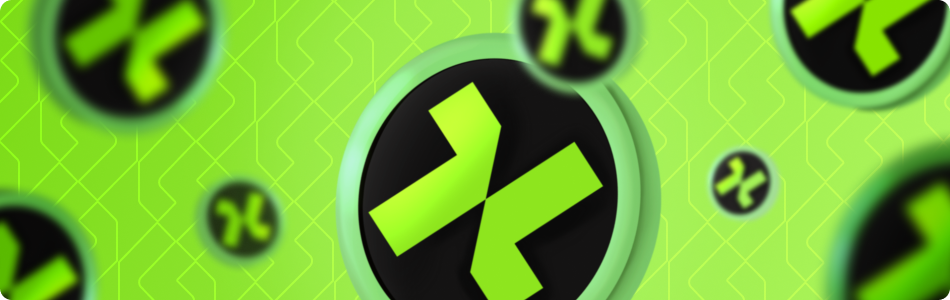

профіль
реферальна програма
Отримайте KANTOR HOUSE коїни – це активи, якими можна торгувати один за одного на біржі. Вони дозволяють порівнювати витрати між різними криптовалютами.
Ці пари допомагають проілюструвати відносну цінність монет.
